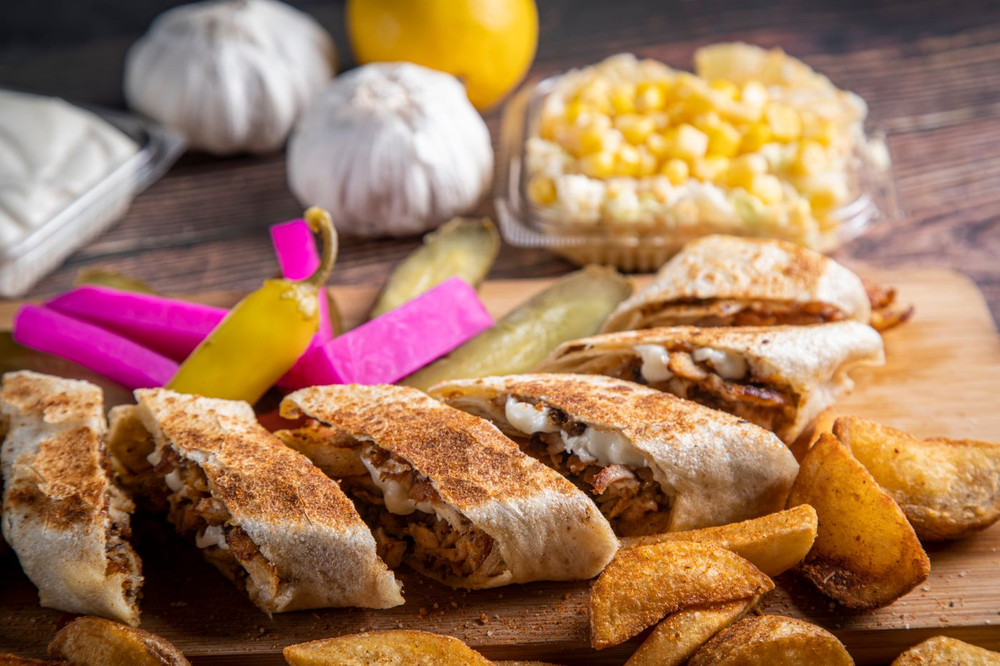
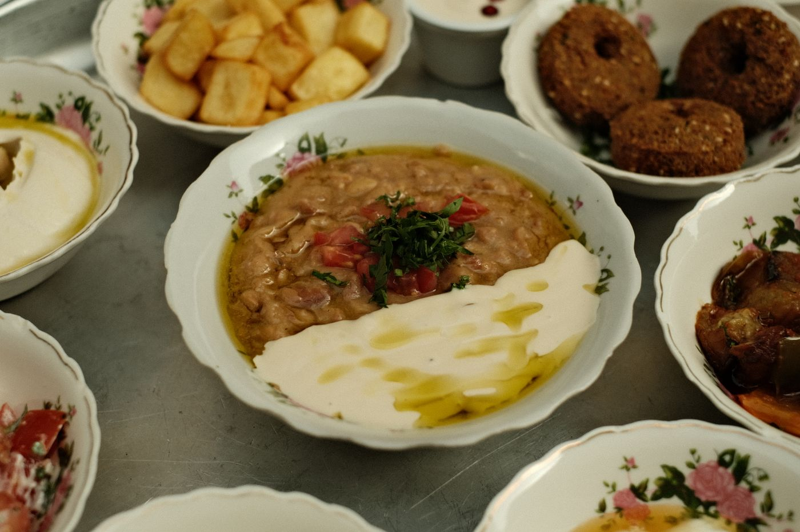

شاورما عربي
لقمات شاورما، بطاطس ومخلل. طبق يليق باللمة.
من المقبلات لأول لقمة شاورما، سفرة مستوحاة من دفء المطبخ الشامي وكرم ضيافته.
تفضّل على المنيو ↓
باب حلبباب حلب مطعم يقدّم المطبخ الشامي بصورة دافئة وواضحة. الأخضر العميق، الخط العربي، وتفاصيل الأقواس تستعير روح المكان من غير زحام.
استفسر عن المناسبات والطلبات الكبيرة.
نعم، الأصناف والصور والنصوص قابلة للتعديل داخل ملفات الموقع.
هذه الخطوة غير متصلة بخدمة فعلية حاليًا، ولم يتم إرسال أي طلب أو تحصيل أي مبلغ.